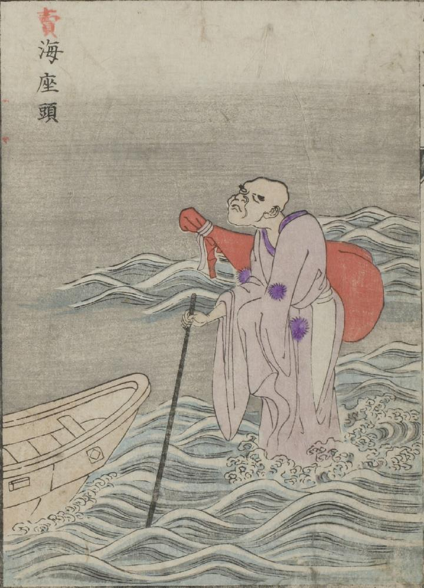

座頭；ザトウ，海；ウミ，船；フネ

琵琶を背負った座頭が、海の上に立っている。画面左端には、船の一部が描かれている。
出典：親書誌：U426_nichibunken_0051：怪物画本；カイブツエホン／日付：2006／資源識別子：U426_nichibunken_0051_0024_0000
Copyright (c)2010- International Research Center for Japanese Studies, Kyoto, Japan. All rights reserved.